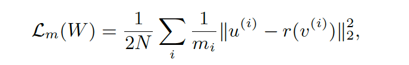
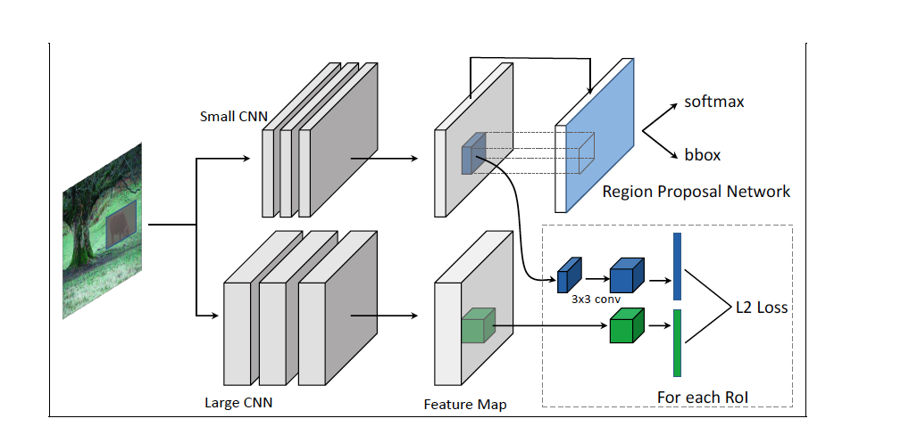
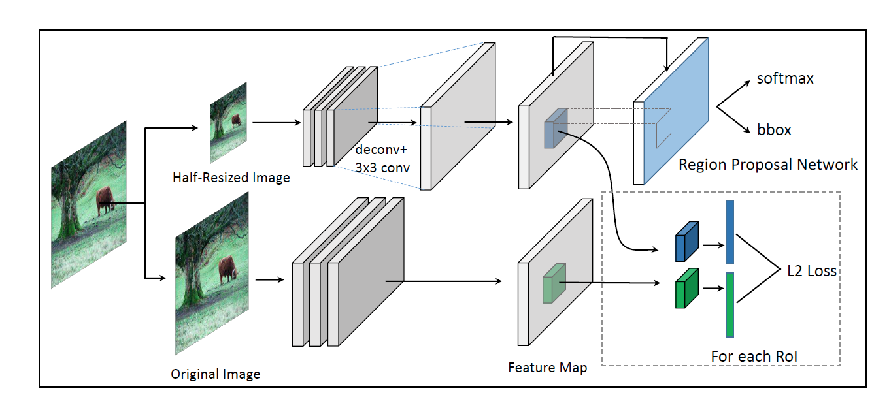

Mimicking Very Efficient Network for Object Detection
URL:http://openaccess.thecvf.com/content_cvpr_2017/papers/Li_Mimicking_Very_Efficient_CVPR_2017_paper.pdf
这篇论文可以理解为关于模型压缩的论文，论文采取大模型来训练小模型的方法，作者claim这是第一次将mimic方法运用到物体检测领域。
之前mimic方法通常用在分类任务中，Mimic方法的出发点是希望大模型学习到的特征可以传递给小模型，这篇论文主要有如下的contribution：
- Feature Map Mimic Learning：不同于分类任务中从大模型的soft targets或者logits来学习小模型，结合物体检测这个具体任务，论文提出大模型的feature map来监督训练小模型，但是CNN网络的最后一层feature map都是一些高维特征，对于一些小物体的表现会比较弱，因此论文以proposal为单位来监督训练，训练目标为：

L(w)为最终的Loss， Lm(W)为大小模型feature map的L2 Loss， Lgt(W)为RPN中cls和reg的Loss，ui是从大模型feature map采样得到的特征，vi是从小模型中采样得到的特征, r为回归函数负责将vi映射到ui的维度上。后期作者多Lm（W）加上norm进行优化：
 - 具体模型结构分为两个阶段：
- 第一阶段可以理解为对RPN的训练：大模型为预训练好的Faster RCNN或者R-FCN，小模型的最后是一个RPN网络，同一张训练图片同时经过大模型和小模型得到对应的feature maps，利用小模型RPN产生的proposal进行上面提到的feature map mimic learning进行训练。
- 第二阶段可以理解为对Faster RCNN或者R-FCN的训练，在这一部分在会加入分类任务中的logits mimic learning利用大模型的logits来监督学习。

除此之外，论文还介绍了在小模型中加入deconv层来解决输入图片较小的情况：

本博客所有文章除特别声明外，均采用 CC BY-NC-SA 4.0 许可协议。转载请注明来自 Out of Memory！